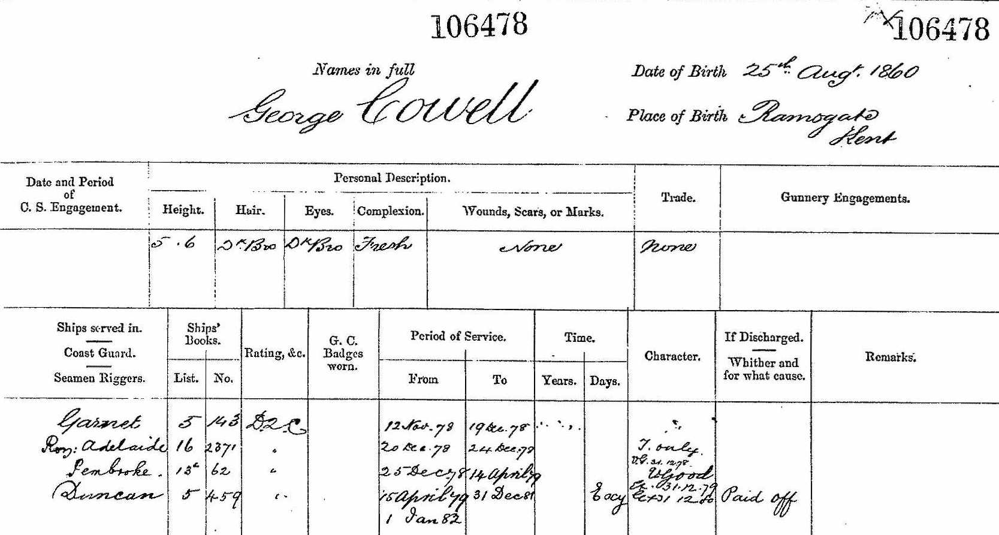

George Henry Cowell 1860 - c1942
[ Home ] | [ Calendar ] | [ Surnames Index ] | [ Errors ] | [ Family History ]An army ordnance depot foreman and the child of Benjamin Cowell (a mariner) and Sarah Ewen (a needlewoman), George Cowell, the second cousin three-times-removed on the mother's side of Nigel Horne, was born in Ramsgate, Kent, England on 25 Aug 18601, was baptised there at St George's Church, Church Hill on 25 Nov 1860 and married Ellen Bockham (with whom he had 3 children: Alice Sarah, Ellen Martha and Elizabeth Mabel) in St. Mary's Church, Chatham, Kent, England on 8 Apr 18833.
During his life, he was living at Belle Vue Hill in Ramsgate on 7 Apr 18619; at 2 Rodney Street in Ramsgate on 2 Apr 18717; at Maidstone Road, Rochester, Kent on 5 Apr 18916; at 1 Quarters, Fort Clarence, Rochester, Kent on 31 Mar 19015; and at 186 Castle Road in Chatham on 29 Sept 19398 which is where he died c. Aug 19422. On 12 Nov 1878 he was serving in the navy (Royal Navy).He was buried at Maidstone Road Cemetery, Chatham on 26 Sept 1942 (a drizzly day)4.
Parents
- Benjamin was born in 1825
- Sarah was born on 1 Jan 1827
Children
- Alice Sarah was born on 1 Dec 1883
- Ellen Martha was born on 22 Dec 1885
- Elizabeth Mabel was born on 13 Apr 1890
Citations
- England & Wales births 1837-2006 - Findmypast
- England & Wales deaths 1837-2007 - Findmypast
- England & Wales marriages 1837-2008 - Findmypast
- Kent Burials - Findmypast
- 1901 England, Wales & Scotland Census - Findmypast (was age 40 and the head of the household)
- 1891 England, Wales & Scotland Census - Findmypast (was age 30 and the head of the household)
- 1871 England, Wales & Scotland Census - Findmypast (was age 10 and the son of the head of the household)
- 1939 Register - Findmypast (was recorded at this address)
- 1861 England, Wales & Scotland Census - Findmypast (was age 0 and the son of the head of the household)
Media
George Cowell - Naval Record

1901 England, Wales & Scotland Census - GBC/1901/0005415326
England & Wales births 1837-2006 - BMD/B/1860/3/AZ/000224/028
1871 England, Wales & Scotland Census - GBC/1871/0014299390
England & Wales deaths 1837-2007 - BMD/D/1942/3/AZ/000161/023
England & Wales marriages 1837-2008 - BMD/M/1883/2/AZ/000059/080
England Marriages 1538-1973 - R_845074092
1939 Register - TNA/R39/1691/1691E/006/28
1861 England, Wales & Scotland Census - GBC/1861/0003537006
1911 England, Wales & Scotland Census Transcription - GBC-1911-RG14-03888-0445-1
Kent Burials - KENT/FHS/BUR/CIVIL/012226
England Births & Baptisms 1538-1975 - R_884616503
Kent Baptisms - GBPRS/CANT/B/96021699
Family Tree

Map
Generated by ged2site. Last updated on Jul 3, 2024
Known Issues
Census information missing between Census UK 1871 and Census UK 1891
Location for "military service" on 12 Nov 1878 is empty